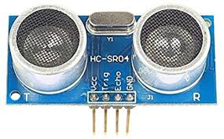

HC-SR04 Sonar Rangefinder¶
The HC-SR04 sonar is an inexpensive but short range (only up to 2m) range finder primarily designed for indoor use but which has been successfully used outdoors on Copter. The very short range makes it of limited use.
Warning
RNGFNDx_MAX_CM must be set to a tested, appropriate value. If RNGFNDx_MAX_CM is set to a value greater than 2m, the autopilot will not respond correctly to the data provided.
Connection to the autopilot¶
Two GPIOs are required for the Trigger pin (starts the sonar pulse) and Echo pin (indicates reception of the echo). These can be a PWM output if the BRD_PWM_COUNT is set such that two are available, or if the autopilot has dedicated GPIO outputs (see the autopilot’s description or datasheet).
Note
in firmware versions 4.2 and later, the method for setting a PWM/SERVO/MOTOR output to be a GPIO function is changed. Instead of BRD_PWM_COUNT being used, the individual SERVOx_FUNCTION parameter is merely set to “-1”. If set to “0”, it remains a PWM output, unassigned to a function, and outputs that output’s trim value when board safety is not active. If the servo function is being “mirrored” to a remote device, as in the case of a DroneCAN or KDECAN ESC, then in order to change the autopilot board’s corresponding output pin to be a GPIO, but allow the SERVOx_FUNCTION to still be assigned to the remote device, the SERVO_GPIO_MASK parameter can be used to assign the board pin to be a GPIO without affecting the SERVOx_FUNCTION assignment for the remote device.
To setup as the first rangefinder. Reboot after setting parameters:
RNGFND1_MAX_CM = “200” (i.e. 2m max range)
RNGFND1_MIN_CM = “20” (i.e. 20cm min range)
RNGFND1_STOP_PIN = Enter GPIO number for pin attached to HC-SRO4 “Trigger” pin. For example, on PixHawk with
BRD_PWM_COUNT= 4, AUX6 (GPIO 55) could be used here, and AUX5 (GPIO54) could be used below.RNGFND1_PIN = Enter GPIO number for pin attached to HC-SRO4 “Echo” pin.
RNGFND1_TYPE = “30” (HC-SR04 sonar)
RNGFND1_ORIENT = “25” (Downward facing) if used for altitude control.